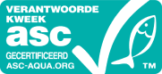

Color test, salmonbellies ensures clients demand are met and that producer delivers accordingly.
WE ARE MSC CERTIFIED (MSC-C-55443). LOOK FOR THE BLUE MSC LABEL

WE ARE ASC CERTIFIED (ASC-C-01179). LOOK FOR THE AQUA GREEN ASC LOGO
Kalaneuvos Oy’s product selection includes fresh, smoked, cold smoked, frozen, slightly salted and marinated products. We provide fish products in several variants – caviar, whole fish, fillets, slices, portions, cubes, boneless and skinless fish. We have the ISO 9001 Quality Management System and the FSSC 22000 Food Safety System Certification, which provide a framework for effectively managing our organisation’s quality and food safety responsibilities. We also have the ISO 14001 Environmental Management System.